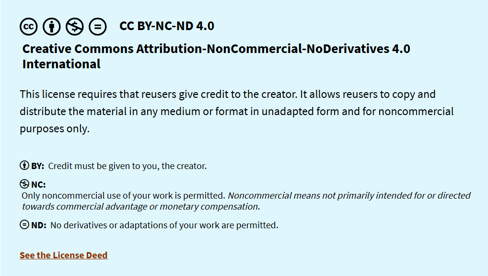

Créditos
El trabajo se protege bajo la licencia Creative Commons que se muestra a continuación:

Considerando lo anterior, usted es libre de:
- Compartir-copiar y distribuir el material en cualquier medio o formato
- Adaptar-remezclar,transformar y costruir a partir del material
- La licenciante no puede revocar estas libertades en tanto usted siga
los términos de la licencia
Bajo los siguintes términos:
- Atribución-Usted debe dar crédito de manera adecuada, brindar un enlace a la
licencia, e indicar si se han realizado cambios. Puede hacerlo en cualquier forma
razonable, pero no de forma tal que sugiera que usted o su uso tienen el apoyo de
la licenciante.
- No Comercial-Usted no puede hacer uso del material con propósitos
comerciales.
- Compartir Igual-Si remezcla,transforma o crea a partir del material,
debe distribuir su contribución bajo la misma licencia del original.
- No hay restricciones adicionales-No puede aplicar términos legales ni
medidas tecnológicas que restrinjan legalmente a otras a hacer cualquier uso permitido.
INTEGRANTES:
- Valentina Licea Trujeque
- Daniel Orea Juarez
ASIGNATURA:
- CAPACITACIÓN PARA EL TRABAJO II: TIC
DOCENTE:
- MTI.–Med.Alejandra Lòpez Nùñez
ESCUELA:
- Instituto de la Vera Cruz